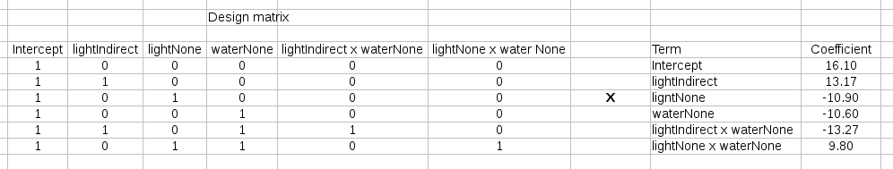
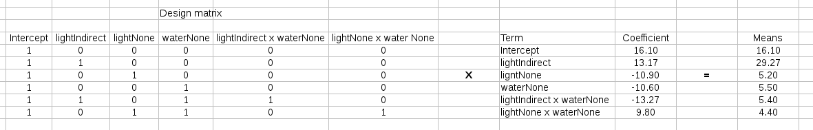
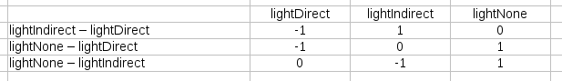
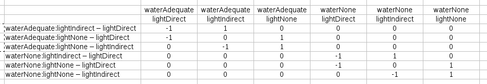
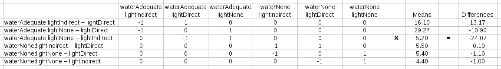

The glht() command can accept user-specified contrasts, which means we can make any comparison between means that we want, and glht() will do the appropriate adjustments for multiple comparisons for us.
However, glht() wants us to specify the contrasts we want in the form of a matrix. The matrix we will supply will be a matrix that produces the comparisons between groups we are interested in, which is the product of a contrast matrix and a design matrix.
The design matrix is just a matrix that represents how we would predict the mean for each combination of factor levels in our model. For example, if we are working with the model:
height ~ light + water + light * water
how would we go about predicting the mean heights? The GLM would look like this:
height = β1 + β2 lightIndirect + β3 lightNone + β4 waterNone + β5 lightIndirect x waterNone + β6 lightNone x waterNone
For a plant that was grown in direct light with no water, we would substitute the appropriate 0's and 1's for the dummy-coded terms, and that would give us:
height = β1 + β2 0 + β3 0 + β4 1 + β5 0 + β6 0
A plant that was grown in indirect light with no water would look like this:
height = β1 + β2 1 + β3 0 + β4 1 + β5 1 + β6 0
The 0's and 1's used for dummy coding are a way of identifying which of the coefficients are used in calculating the mean heights for any given combination of levels.
A list of all the combinations possible, along with a matrix of 0's and 1's that indicate which coefficients are needed to calculate the mean for that combination, is here:
|
translates into: |
|
The matrix on the right is called the design matrix. In addition to the dummy coding, we needed to add a 1 for the intercept to make sure it would be used for all of the calculations of means.
We can use the design matrix along with a matrix of coefficients from our model to calculate all the means for all the combinations shown to the left, using matrix multiplication. First, we arrange the design matrix and the coefficients like so:
Matrix multiplication involves multiplying across the rows of the left matrix, and down the columns of the right, and adding products of matching elements. The result that we get will have the number of rows of the left (design) matrix, and the number of columns of the right (coefficient) matrix, so we'll make a matrix with a single column and six rows (a matrix with a single row or a single column is called a vector, so the result will be a vector of means for each of our combinations of light and water).
For example, to calculate the first combination (direct light, adequate water), the calculation is:
1 x 16.10 + 0 x 13.17 + 0 x -10.90 + 0 x -10.60 + 0 x -13.27 + 0 x 9.80 = 16.10
This gives us the first row of our vector of means - row 1 of the design matrix, column 1 of the coefficient vector gives us row 1, column 1 of the vector of means.
The next combination, indirect light with adequate water, is:
1 x 16.10 + 1 x 13.17 + 0 x 13.17 + 0 x -10.90 + 0 x -10.60 + 0 x -13.27 + 0 x 9.80 = 29.27
Row 2 of the design matrix, column 1 of the coefficient vector gives us row 2, column 1 of the vector of means. We would keep working our way down the rows of the design matrix, until we get a complete vector of means, like so:
The second matrix we need is the contrast matrix, and it has a different purpose and a different structure from the design matrix. The contrast matrix specifies which means will be compared to one another in our post-hoc procedure. If we were only focusing on a Tukey comparison of light levels, we would need a contrast matrix that looks like this:
The row labels give the comparison being made. Within the body of the matrix are 0's, 1's, and -1's which indicate which means are being compared. A -1 assigned to the first mean and a 1 to the second mean causes the first to be subtracted from the second. You'll see that each row specifies one mean subtracted from another, and the 1's and -1's are assigned to make this subtraction. Each row is called a "contrast".
However, we don't want to compare marginal means for a main effect, we have a significant interaction. Instead, we want to condition the comparisons on the water level, which we can accomplish that by modifying the matrix like so:
Now we have six contrasts specified, with the first part of the row labels indicating the water level, separated with a colon from the rest of the label which shows which light level means are actually being compared. The first three contrasts are combinations of light level given adequate water, and the second three contrasts are comparisons among light levels given no water. This contrast matrix has six rows to represent all the contrasts we want to test, as well as six columns - we needed to add a second set of three columns so we could split the means based on the water level.
To calculate the differences between the means for our Tukey tests we just need to multiply this contrast matrix by the set of predicted means we calculated earlier, like so:
You can hopefully see that this matrix multiplication multiplies one mean to be compared by -1 and the other by 1, then adds them together, which is the same as subtracting the first from the second.
So, putting it all together, we did the calculation:
[contrast matrix] x [design matrix] x [coefficients] = differences
We did the design matrix x coefficients step first to get means, and then multiplied the contrast matrix by the means to get the differences.
This is essentially what the script I gave you does, except that glht() just wants the contrast matrix multiplied by the design matrix as input - it takes care of calculating means and differences itself. To do this in R requires that we generate the design matrix and contrast matrix, multiply them together, and then use the result as the linfct statement in glht().
The exact steps for getting these matrices in R are a little complicated - there are extensive comments in the script explaining what it does, and I will be happy to walk you through it if you are interested.